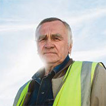

-
Белов Алексей Вадимович
Главный пилот
Высокий профессионализм, честь и отвага - все это характеристики главного пилота Белова А.В. На его счету более 700 полетов. Награжден за мужество и отвагу указом президента.
-
Сухарина Инна Николаевна
Бортпроводник
Благодаря деятельности этого человека, на борту самолета клиенты чувствуют себя, как дома. Инна Николаевна чутко относится ко всем требованиям клиентов, очень любит детей и всячески помогает сделать полет комфортным и приятным.
-

Лещ Борис Анатольевич
Авиатехник
Человек с золотыми руками, инженер и конструктор от Бога! Борис Анатольевич работает уже более 50 лет и на своем веку видел, как из старых моделей самолетов появлялись настоящие авиа шедевры.
-
Дигангидзе Элина Даниловна
Диспетчер
Ей присущ внимательный подход к расчетам, а отменная память удивляет даже самых опытных членов экипажа. За 22 года работы она стажировала более 100 диспетчеров для работы в крупнейших аэропортах страны. Знает в совершенстве 5 иностранных языков.
-
Следь Елена Николаевна
Старший бортпроводник
Вежливая улыбка, внимательность к деталям и большой опыт работы — это лишь малая часть достоинств Елены Николаевны. Старший бортпроводник задает тон всей поездке, поэтому клиенты, которые летят с ней, заряжаются отличным настроением и гармонией.
-
Нестеренко Юрий Афанасьевич
Второй пилот
Правая рука главного пилота, опытный и отважный помощник. О своей работе в шутку говорит так: "Наше дело правое, не мешать левому". Опыт работы составляет 18 лет, внимательно относится ко всем деталям и считает свою работу — делом жизни.
8 (800) 00-392-10
График работы
пн-вс: 09:00-20:00
обед: 14:00-14:30
Экипаж